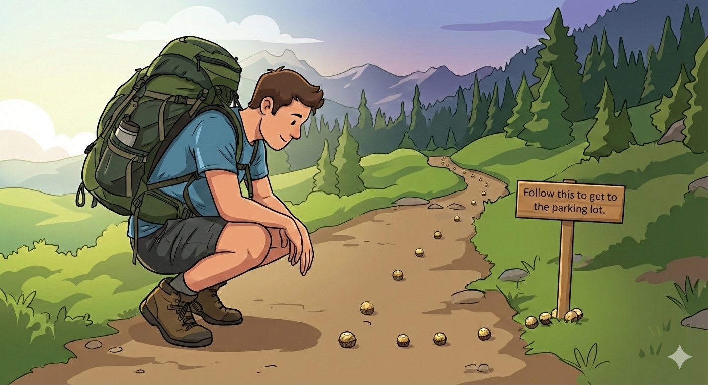

Rest
Ecclesiastes 2:21 & 23:
“For a person may labor with wisdom, knowledge, and skill, and then they must leave all they own to another who has not toiled for it… All their days their work is grief and pain; even at night their minds do not rest. This too is meaningless.”
It’s the same Bible that asks us to work hard like the ants, also give us the above wisdom from Ecclesiastes. Let’s contextualize this.
Imagine you’re on a hike up the mountains and you’ve strayed away from the trail with no GPS. After a while, you discover that someone has left a trail of Ferrero Rocher chocolates (I am rethinking a children’s story) with a sign that says, “Follow this to get to the parking lot.” I don’t know about you but I would definitely start collecting them and following the trail to get to the parking lot, since there are not many options at this point.

Once you reach the parking lot, you notice that the trail extends even further with more chocolates, and you get greedy. An unsatisfied mind decides to keep going down that path for hours just to have more. Congratulations, now not only you’re lost again, but you also have a good chance of diabetes if you have been eating many of ‘em.
So I guess the lesson here is finding balance. Knowing when and where to stop is wisdom.
Isaiah 30:15 says, “In repentance and rest is your salvation.”
Resting is a sign that you’re on the path of moksha. And fortunately, there is a way to achieve rest (Yeah rest is an achievement).
Lord Jesus said, “Come to me, all you who are weary and burdened, and I will give you rest. Take my yoke upon you and learn from me, for I am gentle and humble in heart, and you will find rest for your soul.”
Rest my friend, Rest.